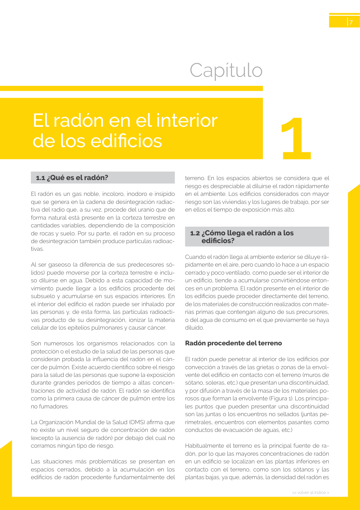

<!doctype html>
<html lang="es"><head><meta charset="utf-8">
<meta name="viewport" content="width=device-width, initial-scale=1">
<title>GUIA · p. 7 — Página 7</title><link rel="stylesheet" href="../estilo.css">
</head><body>
<nav><a href="../index.html">Índice</a> › <a href="../doc/guia-pdf-23d2f2198c3b-sin-fecha-6765d0c34c51.html">GUIA</a> › p. 7</nav>

<header class="meta">
<p><strong>GUIA</strong> · Página 7 · versión sin-fecha</p>
<p>SHA256: <code>6765d0c34c51fbe193c3ed0c1378b710f98f086d16e2b68fc28ed36e143fdaea</code> · página física 7 de 24 · métodos de encabezado
solo si están cotejados.</p>
<p><a href="../doc/guia-pdf-23d2f2198c3b-sin-fecha-6765d0c34c51.html">Documento</a> · <a href="guia-pdf-23d2f2198c3b-sin-fecha-6765d0c34c51__p0006.html">← p. 6</a> · <a href="guia-pdf-23d2f2198c3b-sin-fecha-6765d0c34c51__p0008.html">p. 8 →</a></p>
<p>Formatos: <a href="../../contenido/docs/GUIA-PDF-23d2f2198c3b/sin-fecha__6765d0c34c51/pagina/p0007.md">Markdown</a> · <a href="../../contenido/docs/GUIA-PDF-23d2f2198c3b/sin-fecha__6765d0c34c51/bloque/p0007.json">JSON de bloques</a> · <a href="../../contenido/docs/GUIA-PDF-23d2f2198c3b/sin-fecha__6765d0c34c51/fuente.pdf#page=7">PDF p. 7</a> · <a href="../../contenido/docs/GUIA-PDF-23d2f2198c3b/sin-fecha__6765d0c34c51/figura/p0007.png">imagen PNG</a></p>
</header>
<nav class="paginas"><a href="../doc/guia-pdf-23d2f2198c3b-sin-fecha-6765d0c34c51.html">Documento</a> <a href="guia-pdf-23d2f2198c3b-sin-fecha-6765d0c34c51__p0006.html">← p. 6</a> <a href="guia-pdf-23d2f2198c3b-sin-fecha-6765d0c34c51__p0008.html">p. 8 →</a></nav>
<h2>Encabezado de la página</h2><ul><li>Sin encabezado de fuente cotejada en esta página.</li></ul>

<pre class="literal">&gt;&gt; volver al índice &gt;
7
1.1 ¿Qué es el radón?
El radón es un gas noble, incoloro, inodoro e insípido 
que se genera en la cadena de desintegración radiac­
tiva del radio que, a su vez, procede del uranio que de 
forma natural está presente en la corteza terrestre en 
cantidades variables, dependiendo de la composición 
de rocas y suelo. Por su parte, el radón en su proceso 
de desintegración también produce partículas radioac­
tivas.
Al ser gaseoso (a diferencia de sus predecesores só­
lidos) puede moverse por la corteza terrestre e inclu­
so diluirse en agua. Debido a esta capacidad de mo­
vimiento puede llegar a los edificios procedente del 
subsuelo y acumularse en sus espacios interiores. En 
el interior del edificio el radón puede ser inhalado por 
las personas y, de esta forma, las partículas radioacti­
vas producto de su desintegración, ionizar la materia 
celular de los epitelios pulmonares y causar cáncer.
Son numerosos los organismos relacionados con la 
protección o el estudio de la salud de las personas que 
consideran probada la influencia del radón en el cán­
cer de pulmón. Existe acuerdo científico sobre el riesgo 
para la salud de las personas que supone la exposición 
durante grandes períodos de tiempo a altas concen­
traciones de actividad de radón. El radón se identifica 
como la primera causa de cáncer de pulmón entre los 
no fumadores.
La Organización Mundial de la Salud (OMS) afirma que 
no existe un nivel seguro de concentración de radón 
(excepto la ausencia de radón) por debajo del cual no 
corramos ningún tipo de riesgo.
Las situaciones más problemáticas se presentan en 
espacios cerrados, debido a la acumulación en los 
edificios de radón procedente fundamentalmente del 
terreno. En los espacios abiertos se considera que el 
riesgo es despreciable al diluirse el radón rápidamente 
en el ambiente. Los edificios considerados con mayor 
riesgo son las viviendas y los lugares de trabajo, por ser 
en ellos el tiempo de exposición más alto.
1.2 ¿Cómo llega el radón a los 
edificios?
Cuando el radón llega al ambiente exterior se diluye rá­
pidamente en el aire, pero cuando lo hace a un espacio 
cerrado y poco ventilado, como puede ser el interior de 
un edificio, tiende a acumularse convirtiéndose enton­
ces en un problema. El radón presente en el interior de 
los edificios puede proceder directamente del terreno, 
de los materiales de construcción realizados con mate­
rias primas que contengan alguno de sus precursores, 
o del agua de consumo en el que previamente se haya 
diluido.
Radón procedente del terreno
El radón puede penetrar al interior de los edificios por 
convección a través de las grietas o zonas de la envol­
vente del edificio en contacto con el terreno (muros de 
sótano, soleras, etc.) que presentan una discontinuidad, 
y por difusión a través de la masa de los materiales po­
rosos que forman la envolvente (Figura 1). Los principa­
les puntos que pueden presentar una discontinuidad 
son las juntas o los encuentros no sellados (juntas pe­
rimetrales, encuentros con elementos pasantes como 
conductos de evacuación de aguas, etc.)
Habitualmente el terreno es la principal fuente de ra­
dón, por lo que las mayores concentraciones de radón 
en un edificio se localizan en las plantas inferiores en 
contacto con el terreno, como son los sótanos y las 
plantas bajas, ya que, además, la densidad del radón es 
Capítulo
El radón en el interior
de los edificios
1
</pre>
<figure><a href="../../contenido/docs/GUIA-PDF-23d2f2198c3b/sin-fecha__6765d0c34c51/figura/p0007.png"></a><figcaption>Imagen de la página 7 (PNG ya extraído; prevalece sobre fórmulas).</figcaption></figure>
<h2>Tablas candidatas de esta página</h2><ul><li><a href="../../contenido/docs/GUIA-PDF-23d2f2198c3b/sin-fecha__6765d0c34c51/tabla/p0007_t01.json">p0007_t01.json</a> · <a href="../../contenido/docs/GUIA-PDF-23d2f2198c3b/sin-fecha__6765d0c34c51/tabla/p0007_t01.csv">.csv</a> (1 × 2; candidata, no reconstruida aquí)</li></ul>
<h2>Referencias, notas y excepciones (página y vecinas)</h2><ul><li><a href="../apartado/guia-pdf-23d2f2198c3b-sin-fecha-6765d0c34c51__a0022.html">ID a0022 · ¯</a></li></ul>
<h2>Apartados que incluyen esta página</h2><ul><li><a href="../apartado/guia-pdf-23d2f2198c3b-sin-fecha-6765d0c34c51__a0012.html">ID a0012 · El radón en el interior de los edificios</a></li><li><a href="../apartado/guia-pdf-23d2f2198c3b-sin-fecha-6765d0c34c51__a0013.html">1.1 · 1.1 ¿Qué es el radón?</a></li><li><a href="../apartado/guia-pdf-23d2f2198c3b-sin-fecha-6765d0c34c51__a0014.html">1.2 · 1.2 ¿Cómo llega el radón a los edificios?</a></li><li><a href="../apartado/guia-pdf-23d2f2198c3b-sin-fecha-6765d0c34c51__a0015.html">ID a0015 · Radón procedente del terreno</a></li><li><a href="../apartado/guia-pdf-23d2f2198c3b-sin-fecha-6765d0c34c51__a0016.html">ID a0016 · Capítulo El radón en el interior</a></li><li><a href="../apartado/guia-pdf-23d2f2198c3b-sin-fecha-6765d0c34c51__a0017.html">ID a0017 · de los edificios</a></li></ul>

<footer>Generado estáticamente desde JSON normalizado; sin JavaScript ni servicios externos.
El JSON es la fuente; este HTML es caché reproducible.</footer>
</body></html>
